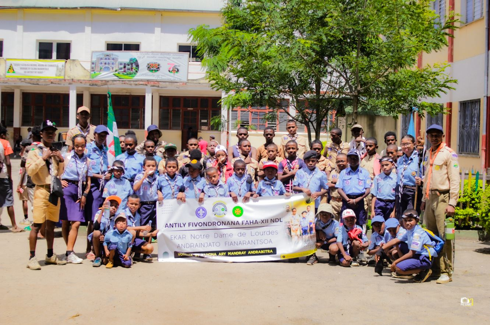
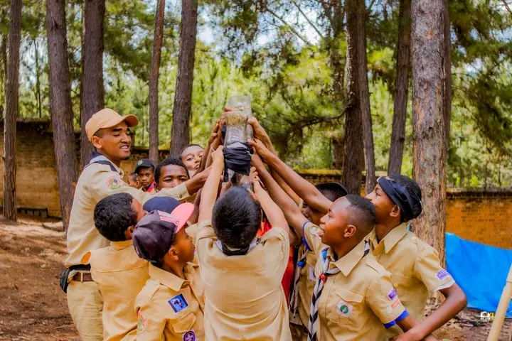
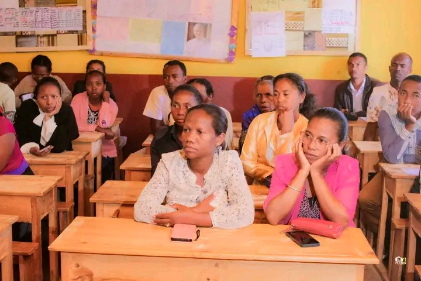
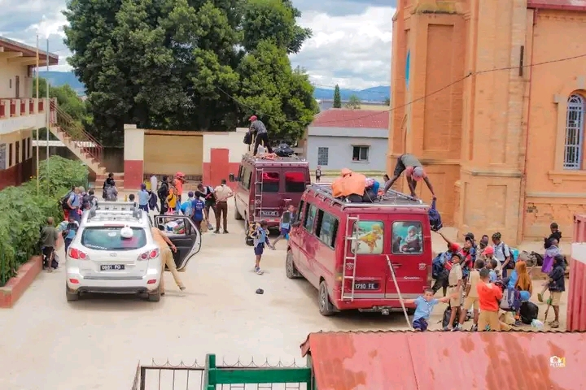
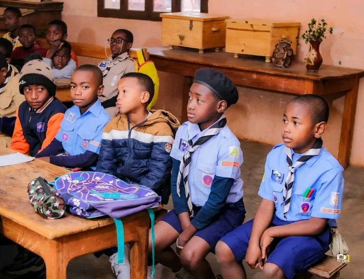
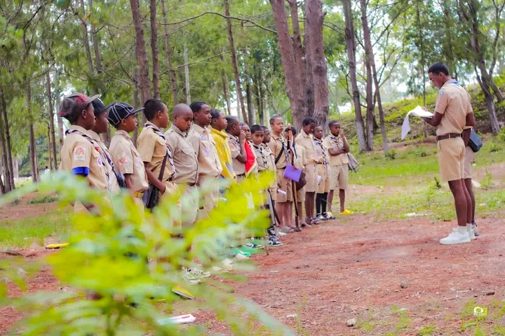
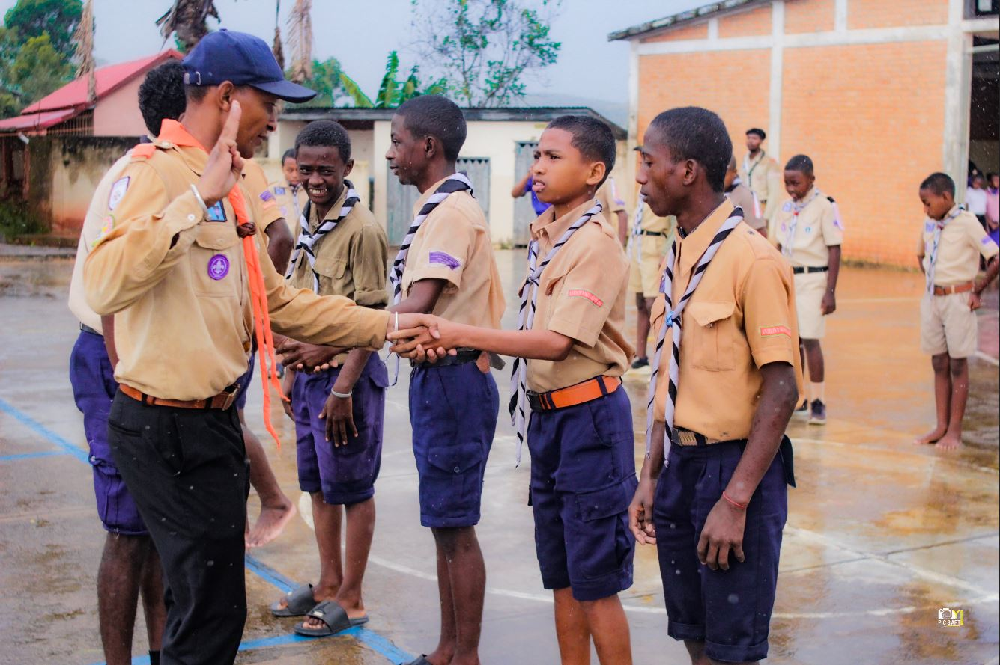
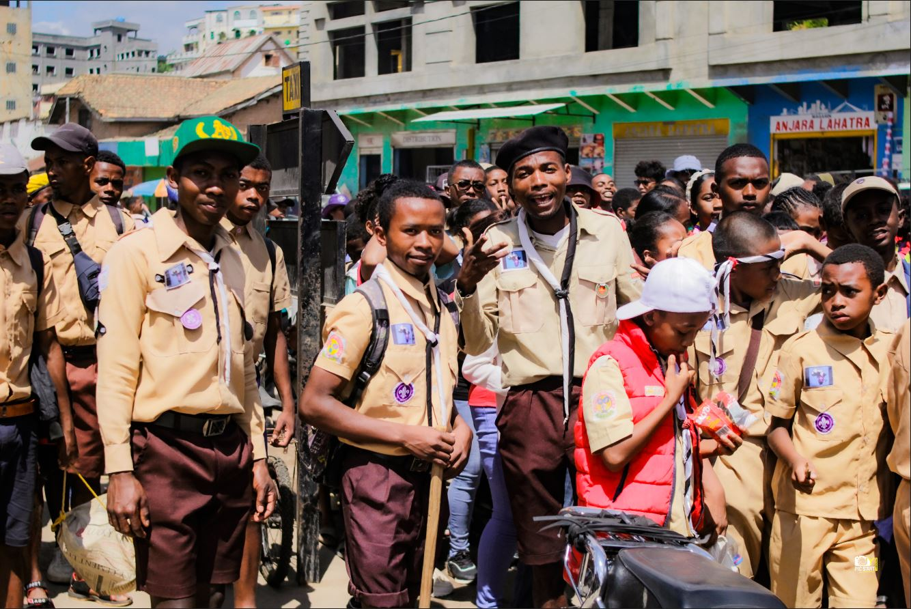

ACTIVITÉ PRINCIPALE
HAZA — La chasse
Premiers pas dans la grande aventure scoute. Découverte par le jeu, la chasse symbolique et l'imaginaire de la meute.

Fivondronana Faha-XII · Diocèse de Fianarantsoa
VONONA MANDRAKARIVA
Andrainjato Fianarantsoa — Groupe scout catholique éduquant la jeunesse malagasy à travers la méthode scout crée par Lord Baden-Powell, dans la foi et l'engagement.
Découvrir nos missions → Nous rejoindreNOTRE SLOGAN
MAINTY · FOTSY · HATRANY²
NOTRE LOCALISATION
Notre groupe est implanté à l'ECAR Notre Dame de Lourdes,
quartier d'Andrainjato à Fianarantsoa — capitale
spirituelle du sud
des Hautes Terres malgaches. Nous formons la 12e Fivondronana
du diocèse.
ECAR Notre Dame de Lourdes, Andrainjato Fianarantsoa
BP : 301 — Fivondronana Faha-XII NDL
Fivondronana Faha-XII

+100
JEUNES ENGAGES
DERNIERS MOIS
Quelques moments forts vécus par notre groupe au cours des derniers mois.

Mars 2025
Maharomby, Fianarantsoa

Février 2025
ECAR Andrainjato

Décembre 2024
Andranomafana, Vatovavy
Notre famille scoute
Quatre branches, quatre univers — chaque jeune progresse selon son âge, avec ses propres méthodes, totems et symboles.

ACTIVITÉ PRINCIPALE
Premiers pas dans la grande aventure scoute. Découverte par le jeu, la chasse symbolique et l'imaginaire de la meute.

ACTIVITÉ PRINCIPALE
L'apprentissage par l'action et la vie en patrouille. Chaque équipe porte le nom et l'esprit d'un animal totem.

ACTIVITÉ PRINCIPALE
Exploration, autonomie et leadership. La nature devient maître et terrain d'aventure.

ACTIVITÉ PRINCIPALE
L'engagement et la création de projets durables qui apportent ressources au groupe et formation aux jeunes.